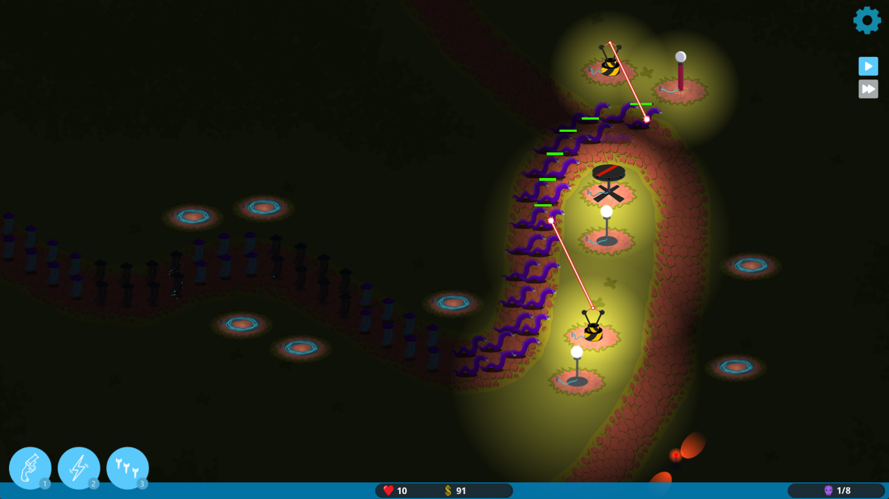
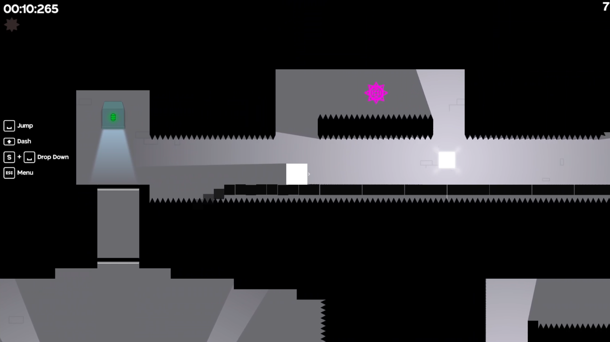
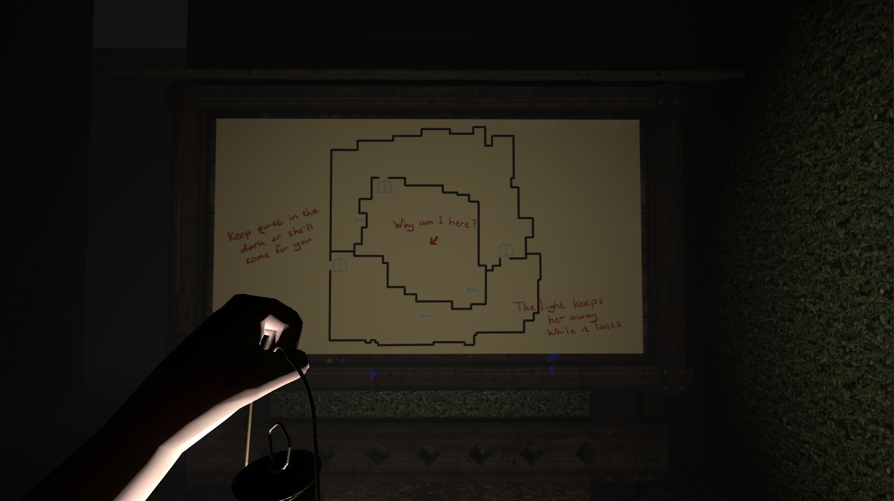

Game Developer & Creative Technologist
Passionate about creating engaging game experiences and innovative tools.
This portfolio showcases my journey in game development, primarily using the Godot engine. My focus is on creating polished, enjoyable experiences across various genres - from precision platformers to tower defense games. I believe in learning by doing, which is why you'll find a mix of completed projects, ongoing work, and experimental prototypes here.
After experimenting with building game engines from scratch in JavaScript, TypeScript, C#, and C++, I realized that my true passion lies in designing and creating games rather than engines. This led me to Godot, where I can focus on what matters most: crafting memorable gameplay experiences.
Games
Night Wave Tower Defence
CompleteA tower defence game inspired by Kingdom Rush, with a unique twist: monsters are obscured by darkness, requiring players to build illumination towers before defensive towers can target enemies. Strategic light placement is key to victory.
There Be Spikes
CompleteA 2D precision platformer focused on platforming puzzles and speedrunning. This project served as a testing ground for refining movement mechanics intended for my upcoming soulsvania project. I created nearly all assets myself, including art and animations (with the only exceptions being the fonts and icons for all the button prompts).
Unnamed Dice Rogue-lite
OngoingA mix of both 2D and 3D elements, this project is currently in the design phase. The player plays on a 2D hexagonal grid controlling a character with simplified Warhammer-model-esq stats. Each room is a new encounter and progress routes are procedural, similar to Hades. Along the way the player will collect dice which serve as the primary mechanic. The dice are the 3D element - the player has a collection of them that is grown and refined as the game progresses. Dice are assigned at the start of each turn to movement, defense, or attack. Then rolled to determine the outcome.
Unnamed Soulsvania Platformer
Design PhaseA 2D souls-like metroidvania set in a dark fantasy world, inspired by Hollow Knight and Salt & Sanctuary. This ambitious project combines challenging combat, exploration, and atmospheric storytelling. Currently on hold while I complete other projects and refine the core mechanics.
Game Jams
Last Light
CompleteMy first game jam entry! A 3D first-person horror game where players must escape a maze inhabited by an angry ghost. Created for the Hawktober Horrors Game Jam in 2025, this project pushed me to work in 3D and explore atmospheric horror mechanics under tight time constraints.
Tools & Experiments
Warhammer 40K 8th Edition List Builder
Not Active
A web-based army list builder for Warhammer 40K 8th Edition. Born from frustration with
existing tools, this application streamlines the army building process. Currently supports
Craftworlds, Harlequins, and Ynnari factions. Not active while I'm not actively playing 40K.
I intend to replace this with a more feature-rich and up-to-date version, but I'm not sure
when I'll have the time to do so.

CodePen Experiments
Not ActiveA collection of physics simulations and 2D game mechanics experiments. These pens explore collision detection, physics resolution, and various game programming challenges. Updated whenever I'm experimenting with new concepts or techniques within the JavaScript domain.
See the Pen 2D Physics Module by Connor (cp-pens) on CodePen.
View CodePen Profile →Shelved Projects
Every developer has a graveyard of projects that taught valuable lessons. Here are some of mine:
2D Game Engine (JavaScript/TypeScript)
ShelvedBuilt a complete ECS architecture, asset management system, audio manager, and scene manager from scratch. Started with JavaScript, then migrated to TypeScript. Began developing a custom WebGL2 renderer but realized I was enjoying engine development more than game development - which led me to reconsider my priorities.
3D Game Engine (C++/OpenGL)
ShelvedFollowing The Cherno's excellent YouTube series, I built a 3D game engine using C++ and OpenGL. While incredibly educational, the scope became too large. I realized that if I wanted to actually create games before retirement, I should use existing engines rather than building my own.
3D Parkour Arena Shooter
ShelvedA parkour-based multiplayer shooter concept developed in Godot. Had some interesting movement mechanics, but other projects took priority. May revisit the core movement system in future projects.
Curriculum Vitae
Professional Experience
Senior Software Developer - Game Development
Stormcraft Studios • 2024 - Present
- Front end web-game development with JavaScript
- Extended and maintained internal engine and tools.
Software Developer - Game Development
Stormcraft Studios • 2017 - 2024
- Front end web-game development with JavaScript
- Extended and maintained internal engine and tools.
- Explored back-end service development with C# and .NET
Software Developer - Game Development
Derivco • 2015 - 2016
- Front end web-game development with Flash and ActionScript 3.0.
- Extended and maintained internal engine and tools.
Technical Skills / Experience
Game Engines & Frameworks
Languages
Tools
Education
BSc Computer Science
University of Cape Town • 2011 - 2014
Graduated with Honors. Co-majored in Computer Games Design.
Relevant Coursework: Data Structures, Algorithms, Game Design Principles and Techniques.